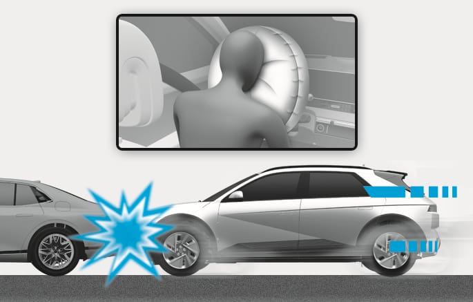
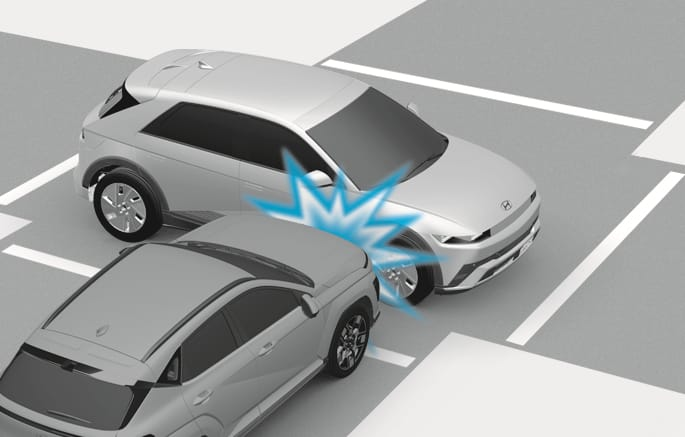
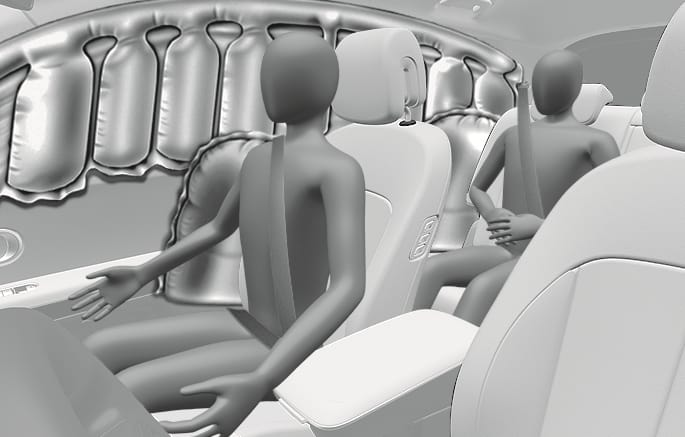

에어백 작동 조건
-
충돌 센서 설치부에 임의로 충격을 가하지 마십시오. 에어백이 작동하는 경우 재산상의 손실 및 인명피해가 발생할 수 있습니다.
-
모터룸 점검 전 시동을 끄고, 점검 중 충돌 센서를 만지거나 분해 또는 조립하지 마십시오. 센서의 설치 각도가 변경되어 에어백이 정상적으로 작동하지 않을 수 있습니다.
-
충격 등으로 인해 앞범퍼, 차체가 변형되거나 B필라 및 C필라의 각도가 변경되면 충돌 센서가 정상적으로 작동하지 않을 수 있습니다. 이런 문제가 의심되는 경우, 당사 직영 하이테크센터나 블루핸즈에서 차량을 점검하십시오.
비포장도로를 주행하거나 보도블록 및 도로의 돌출부를 지날 때 차량의 속도를 충분히 줄이십시오. 차량의 하체로부터 강한 충격이 전해지면 에어백이 작동할 수 있습니다.
운전석 및 동승석 에어백은 정면 충돌 센서가 차량 정면 중앙으로부터 일정 범위 이내의 충격을 감지할 때 작동합니다.

2C_AirbagOperatingConditionFrontAirbag
정면 충돌이 발생하지 않더라도 정면 충돌 센서가 충격을 감지하는 경우 운전석 및 동승석 에어백이 작동할 수 있습니다.

2C_AirbagOperatingConditionSideAirbag

2C_SideCurtainAirbagDeployment
사이드 에어백 및 커튼 에어백은 측면 충돌 센서가 차량 측면의 충격을 감지할 때 작동합니다.
측면 충돌이나 전복 사고가 발생하지 않더라도 측면 충돌 센서가 충격이나 전복 상황을 감지하는 경우 사이드 에어백 및 커튼 에어백이 작동할 수 있습니다.